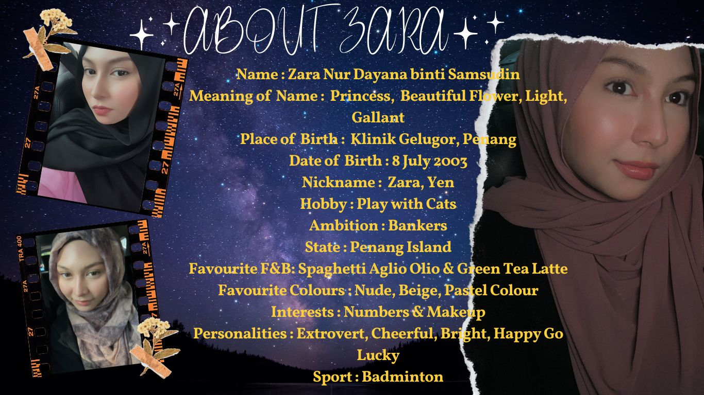
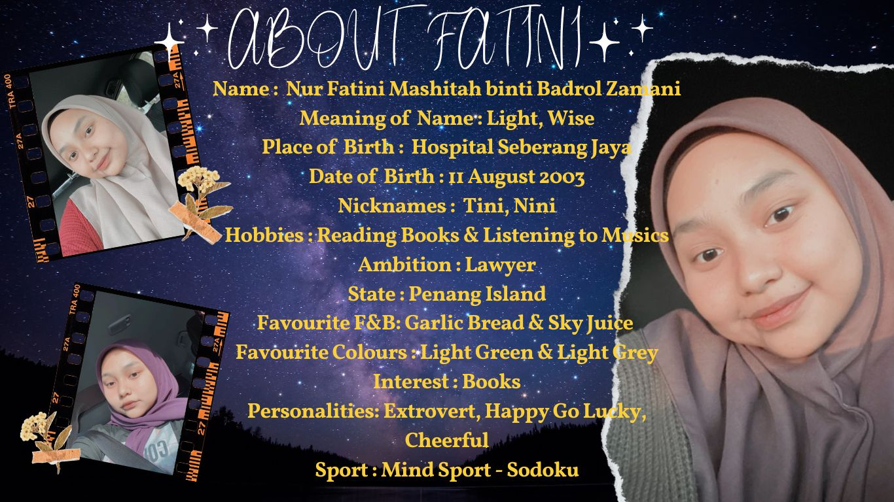
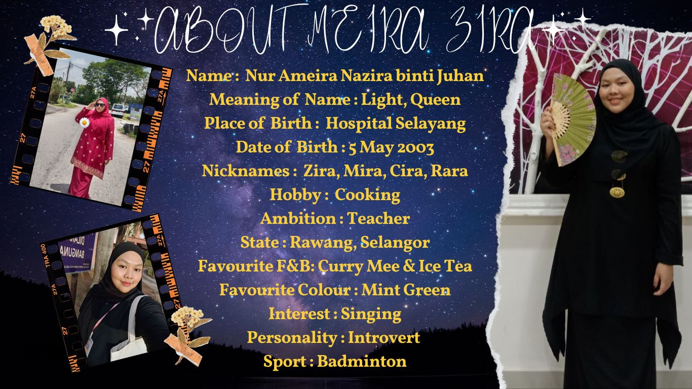
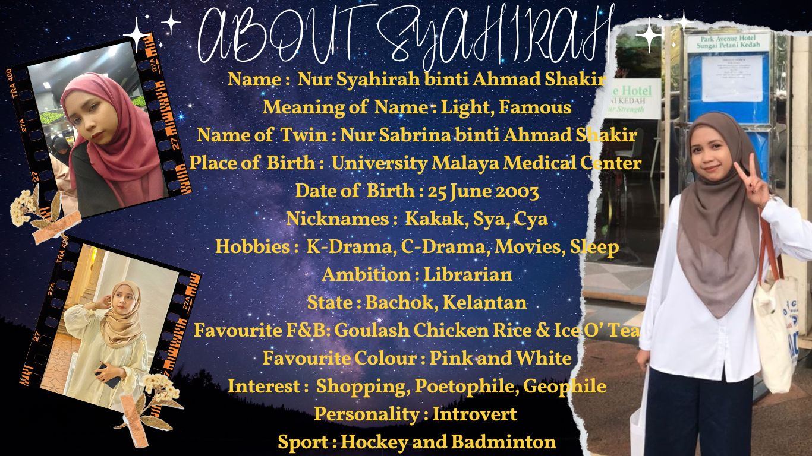
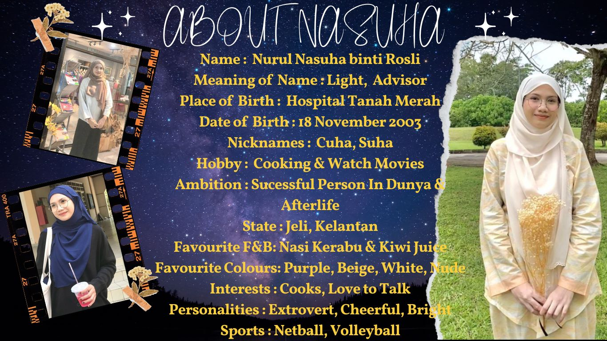
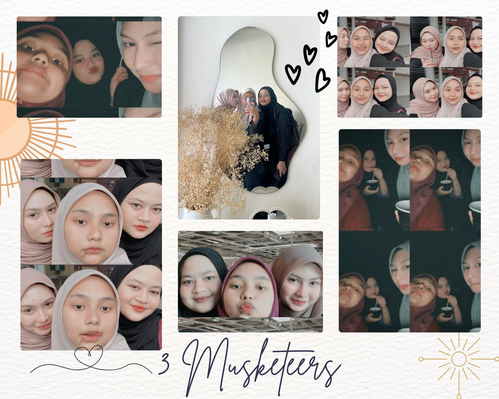
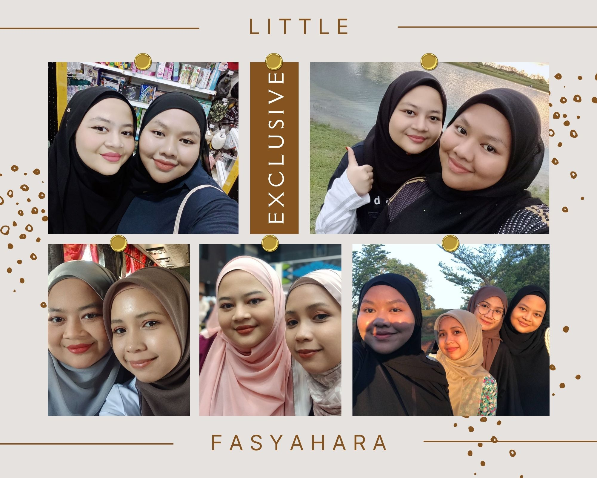
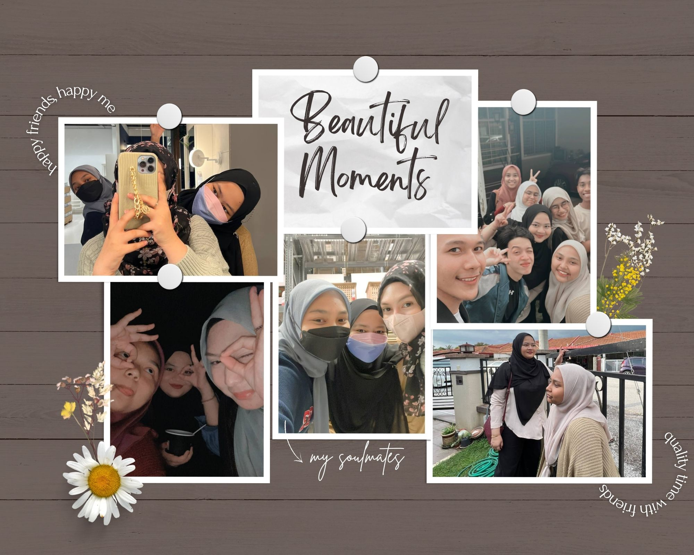

Welcome to my world beyond reality website!
Home
About Myself
My Family
My Education
My Friends
My Hobby
My Social Medias
Zara (Yen)

Fatini (Nini)

Zira (Cira)

Sya (Cya)

Suha (Cuha)

Memories with My Friends
These are my friends who always beside me. I loved them with all my heart.
  